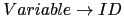

Sig: Recuperación de Errores en Sup: Análisis Sintáctico Ascendente en Ant: Acciones en medio de Con:
yacc proporciona un token especial,
error, que puede ser utilizado en el programa fuente
para extender el traductor con producciones de error
que lo doten de cierta capacidad para
recuperase de una entrada errónea y poder continuar
analizando el resto de la entrada.
yacc
10.1.1 con una entrada errónea:
$ hoc1 yydebug: state 0, reducing by rule 1 (list :) yydebug: after reduction, shifting from state 0 to state 1 3--2 yydebug: state 1, reading 257 (NUMBER) yydebug: state 1, shifting to state 2 yydebug: state 2, reducing by rule 4 (expr : NUMBER) yydebug: after reduction, shifting from state 1 to state 4 yydebug: state 4, reading 45 (illegal-symbol) syntax error yydebug: error recovery discarding state 4 yydebug: error recovery discarding state 1 yydebug: error recovery discarding state 0
Después de detectar el mensaje yacc emite el mensaje
syntax error y comienza a sacar estados de la pìla hasta que esta se vacía.
%{
#define YYSTYPE double
#define YYDEBUG 1
#include <stdio.h>
%}
%token NUMBER
%left '-'
%%
list
:
| list '\n'
| list error '\n' { yyerrok; }
| list expr { printf("%.8g\n",$2);}
;
expr
: NUMBER { $$ = $1;}
| expr '-' expr {$$ = $1 - $3;}
;
%%
list
list error '\n' es una producción de
error. La idea general de uso es que, a traves de la misma, el programador
le indica a yacc que, cuando se produce un error
dentro de una expresión, descarte todos los tokens hasta llegar al
retorno del carro y prosiga con el análisis.
Además, mediante la llamada a la macro yyerrok el programador
anuncia que, si se alcanza este punto, la recuperación puede considerarse ``completa'' y que
yacc puede emitir a partir de ese moemnto mensajes de error
con la seguridad de que no son consecuencia de un comportamiento inestable
provocado por el primer error.
yacc es el siguiente:
error.
error.
error.
goodtoken = 3; b = yylex();
for( ; ; ;) {
s = top(); a = b;
switch (action[s][a])) {
case "shift t" : push(t); b = yylex(); goodtoken++; break;
case "reduce A -> alpha" :
pop(strlen(alpha));
push(goto[top()][A];
break;
case "accept" : return (1);
default : if (errorrecovery("syntax error")) return (ERROR);
}
}
pop() y popstate()
comprueban que hay suficientes elementos en
la pila para retirar. En caso contrario se emitirá un mensaje de error y
se terminará el análisis.
errorrecovery(char * s) {
if (goodtoken > 2) {
yyerror(s); goodtoken = 0;
}
while (action[s][error] != shift)
popstate(s);
push(goto[s][error]);
s = top();
while (action[s][a] == reduce A -> alpha) {
pop(strlen(|alpha|));
push(goto[top()][A];
s = top();
}
switch (action[s][a])) {
case "shift t" :
push(t);
b = yylex();
goodtoken++;
RETURN RECOVERING;
case "accept" : return (ERROR);
default :
do b = yylex();
while ((b != EOF)&&(action[s][b] == error);
if (b == EOF)
return (ERROR);
else
RETURN RECOVERING
}
yacc.
$ yacc -d hoc1.y; flex -l hoc1.l; gcc y.tab.c lex.yy.c; a.out
yydebug: state 0, reducing by rule 1 (list :)
yydebug: after reduction, shifting from state 0 to state 1
2--3-1
yydebug: state 1, reading 257 (NUMBER)
yydebug: state 1, shifting to state 3
yydebug: state 3, reducing by rule 5 (expr : NUMBER)
yydebug: after reduction, shifting from state 1 to state 5
yydebug: state 5, reading 45 ('-')
yydebug: state 5, shifting to state 7
yydebug: state 7, reading 45 ('-')
syntax error
Puesto que es el primer error, se cumple que
(goodtoken > 2), emitiéndose el mensaje de error.
Ahora comienzan a ejecutarse las líneas:
while (!(action[s][error] != shift)) popstate(s);
que descartan los estados, hasta encontrar el estado que contiene el item
list

list  error '\n'
yydebug: error recovery discarding state 7 yydebug: error recovery discarding state 5 yydebug: state 1, error recovery shifting to state 2Una vez en ese estado, transitamos con el token
error,
yydebug: state 2, error recovery discards token 45 ('-')
yydebug: state 2, reading 257 (NUMBER)
yydebug: state 2, error recovery discards token 257 (NUMBER)
yydebug: state 2, reading 45 ('-')
yydebug: state 2, error recovery discards token 45 ('-')
yydebug: state 2, reading 257 (NUMBER)
yydebug: state 2, error recovery discards token 257 (NUMBER)
Se ha procedido a descartar tokens hasta encontrar el retorno
de carro, ejecutando las líneas:
b = yylex(); while ((b != EOF)&&(action[s][b] == error);
yydebug: state 2, reading 10 ('\n')
yydebug: state 2, shifting to state 6
yydebug: state 6, reducing by rule 3 (list : list error '\n')
yydebug: after reduction, shifting from state 0 to state 1
Al reducir por la regla de error, se ejecuta yyerrok
y yacc reestablece el valor de goodtoken.
Si se producen nuevos errores serán señalados.Casiano Rodríguez León